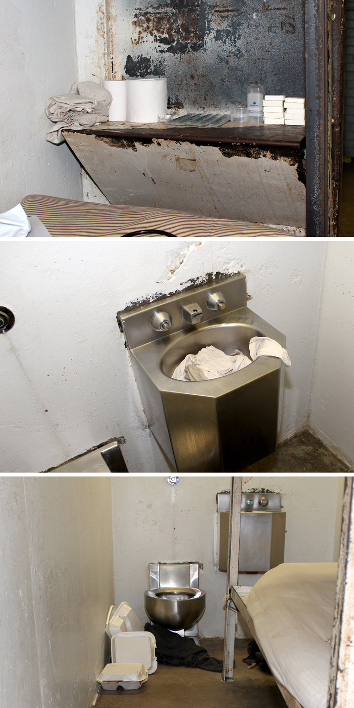

Inside the Cell
Photos of the cell where David Sesson and Bernard Simmons were housed in Menard Correctional Center's solitary wing. The cell is 4 feet 8 inches by 10 feet 8 inches, which is smaller than a parking spot. Rotate the model to see the space at every angle.
